【Vivado开发教程】如何在设计中使用IP¶
- Version
- linhuangnan
- 2024-02-16
- Vivado开发教程
- review
Info
- Vivado IP Overview
- Vivado IP Design Flow
- New Tool：IP Packager
-
Demo
– Project Based IP Design Flow
– Manage IP Design Flow
– Create and Package IP
1、Vivado IP Overview¶
1.1 ISE生成的IP和Vivado生成IP的不同之处：¶
-
（1）ISE生成的是.xco文件，而Vivado生成的文件是.xci文件
-
（2）ISE生成的网表文件是.ngc文件，而Vivado生成的是.dcp文件
-
（3）ISE下面生成的约束是.ucf文件，而在Vivado下面是.xdc文件
-
（4）在ISE下面要用到XilinxCoreLib这个仿真库，而在Vivado下面是不需要的，会生成这个IP所需要的仿真文件
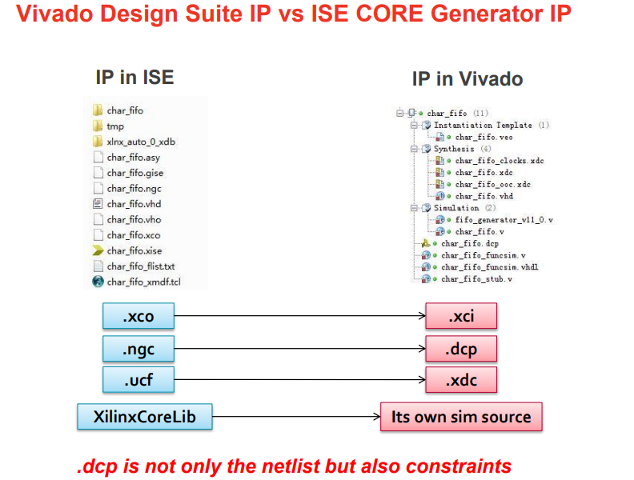
1.2 在Vivado下调用IP会生成如下文件：¶
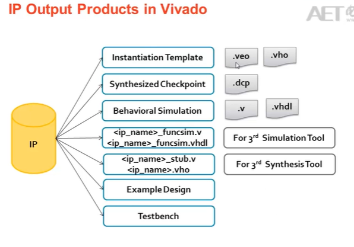
2、Vivado IP Design Flow¶
2.1 在Vivado下有两种方式使用IP¶
（1）采用Manage IP的方式创建IP的工程
（2）在当前的工程中定制IP
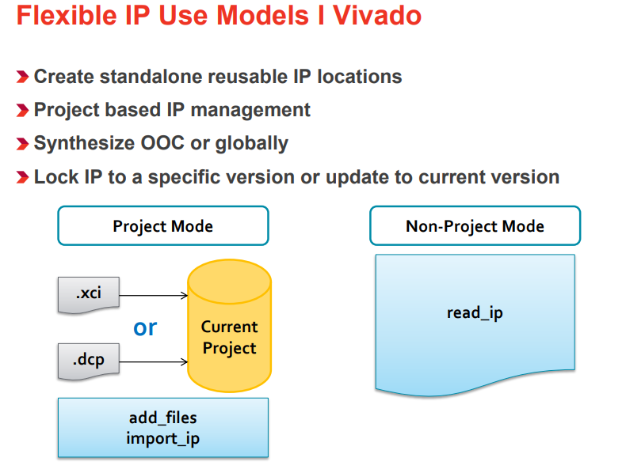
在Vivado设计环境中，所谓的“Flexible IP Use Models”指的是一系列灵活的IP使用模式。这些模式允许设计师以不同方式创建、管理和集成IP核心到他们的项目中，从而满足不同的设计需求和工作流程。
Create standalone reusable IP locations (创建独立可复用的IP位置)¶
这允许开发者创建可以在多个项目中复用的IP库。这样的IP库可以存储在一个集中的位置，便于维护和访问。
Project based IP management (基于项目的IP管理)¶
Vivado提供了一种将IP与特定项目相关联的管理方式。这意味着当你在一个项目中对一个IP进行修改时，这些变更不会影响到其他项目中同一IP的版本。
Synthesize Out-of-Context (OOC) or globally (独立编译或全局编译)¶
“Out-of-Context”(OOC) 编译指的是单独地对某个IP进行综合，而不是在整个设计的上下文中。这使得可以独立优化IP核心，并且能够重用它们的综合结果，加快后续的设计流程。 相比之下，“全局编译”意味着所有的IP和设计元素作为一个整体一起进行综合。
Lock IP to a specific version or update to current version (锁定IP到特定版本或更新到当前版本)¶
Vivado允许用户选择保持某个IP核心的特定版本，这样即使库中的IP有更新，当前项目中使用的仍然是旧版的IP。 用户也可以选择更新IP核心到库中的最新版本，以利用最新的功能或性能改进。
2.2 Manage IP的设计流程¶
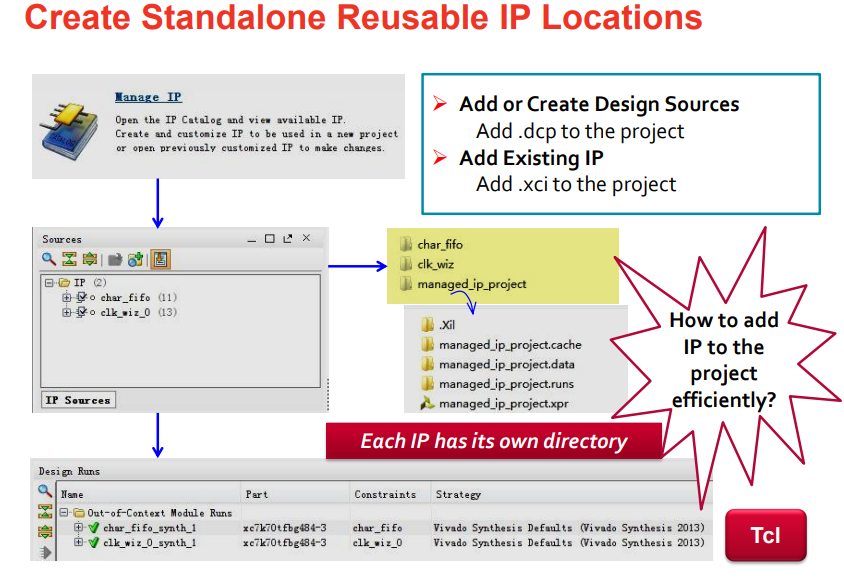
2.3 Project Based IP Management的设计流程¶
在当前工程下点击IP Catolog来定制所需要的IP，之后将IP在设计中实例化。
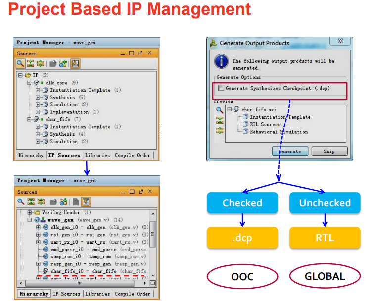
两种设计流程的区别
在Vivado设计环境中，“Manage IP”和“Project Based IP Management”是两种不同的IP管理方法，它们提供了不同的方式来处理设计中使用的IP核心。
Manage IP 设计流程
“Manage IP”流程更关注于为整个组织或团队管理一个集中的IP库。在这个流程中，IP核心被创建、维护并存储在一个与特定项目无关的位置。这样做有几个优势：
-
复用性：独立于项目的IP可以轻松地被多个项目共享和复用。
-
版本控制：可以单独对每个IP核心进行版本控制，确保设计团队能够访问到特定版本的IP。
-
独立更新与维护：IP核心的更新和维护不会直接影响到正在使用旧版本IP的现有项目。
当使用“Manage IP”流程时，通常涉及以下步骤：
-
使用IP Catalog从预定义的模板创建新的IP或选择现有的IP核心。
-
配置选定的IP参数以满足具体设计需求。
-
将配置好的IP核心打包并添加到中心IP库中。
-
在需要时，从IP库中检索并添加IP到各个项目。
Project Based IP Management 设计流程
“Project Based IP Management”则侧重于在特定项目范围内管理IP核心。这种方式允许你在项目文件夹结构内创建、配置和维护IP，使得IP与项目密切相关联。该方法的特点包括：
-
项目隔离：对IP所做的更改局限于当前项目，不会影响到其他项目中相同的IP。
-
简化版本管理：因为IP与特定项目绑定，所以对IP版本的管理变得更加直观。
-
易于归档：由于所有相关的IP文件都包含在项目目录中，项目归档和迁移变得更加方便。
使用“Project Based IP Management”时，通常的步骤如下：
-
在当前项目内部创建和配置IP核心。
-
IP配置信息存储在项目文件中，并且所有改动仅限于该项目。
-
对IP进行综合和实现，作为整个项目设计流程的一部分。
-
如果需要更新或修改IP，更改将只应用于当前项目。
总结来说，“Manage IP”设计流程适合于更广泛的IP复用和跨项目的IP管理，而“Project Based IP Management”设计流程则让IP的管理与特定项目紧密相关联，适合于那些IP配置信息要与项目一起管理的场景。用户可以根据自己的需求和工作方式来选择最合适的IP管理方法。
2.4 Generated XDC¶
针对每个IP，Vivado会生成相应的约束文件XDC.
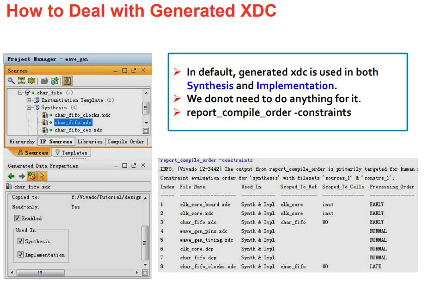
2.5 Open IP Example Design¶
在Vivado下，有的IP会有例子工程，只需要选中IP，然后选择Open IP Example Design，就可以打开一个以该IP为顶层的工程。
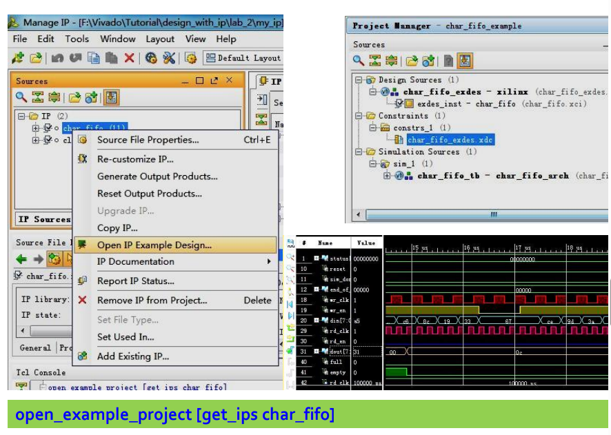
2.6 Using Xilinx IP with 3rd Party Synthesis Tools¶
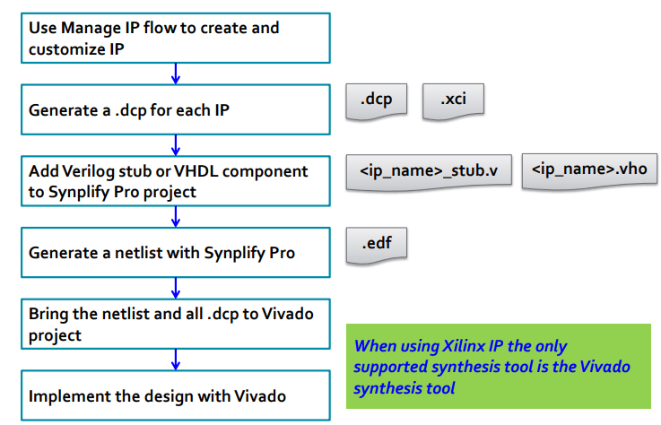
使用第三方综合工具与Xilinx IP核心
当使用第三方综合工具如Synplify Pro与Xilinx IP核心一起时，你可以遵循以下流程来集成和实现设计：
1. Use Manage IP flow to create and customize IP (使用管理IP流程创建和自定义IP)
- 在Vivado中使用“Manage IP”流程来创建和配置所需的IP核心。这涉及到选择正确的IP、设置参数以匹配设计要求，并保存配置。
2. Generate a .dcp for each IP (为每个IP生成.dcp文件)
- 对每个已经创建并配置好的IP核心，生成Design Checkpoint（.dcp）文件。DCP是Vivado中一个封装了设计数据的文件格式，包括了综合后的网表、布局和路由信息等。
3. Add Verilog stub or VHDL component to Synplify Pro project (将Verilog存根或VHDL组件添加到Synplify Pro项目中)
-
为每个IP核心生成相应的Verilog存根文件或VHDL组件声明。这些文件充当IP核心在第三方综合工具中的接口，它们定义了IP核心的端口但不包含实现。
-
将这些文件加入到Synplify Pro项目中，这样你就可以在Synplify Pro中引用Xilinx IP核心了。
4. Generate a netlist with Synplify Pro (使用Synplify Pro生成网表)
- 使用Synplify Pro对整个设计进行综合，产生网表。这个过程中，需要确保IP核心的接口被正确连接到用户逻辑中。
5. Bring the netlist and all .dcp to Vivado project (将网表和所有.dcp文件带到Vivado项目中)
-
将Synplify Pro生成的网表和之前生成的所有.dcp文件导入到Vivado项目中。
-
确保网表文件与.dcp文件中的IP核心匹配，并进行必要的连接。
6. Implement the design with Vivado (使用Vivado实现设计)
-
在Vivado中执行设计实现，包括布局布线（Place & Route）等步骤。
-
Vivado会利用.dcp文件中的信息以确保IP核心按照预期配置和优化。
-
进行必要的时序分析和验证，确保设计满足性能要求。
-
最终生成用于编程FPGA的比特流文件。
通过上述步骤，设计师可以将Xilinx IP核心与第三方综合工具结合使用，同时利用Vivado强大的实现和验证能力来完成高效的设计流程。
2.7 IP Version Control¶
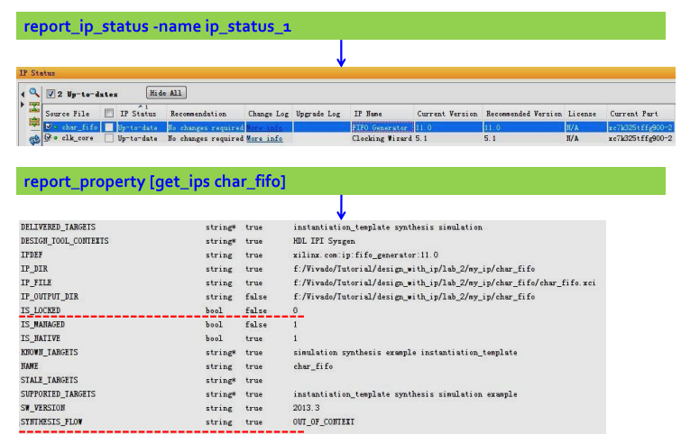
2.8 Some Tcl Commands about IP¶
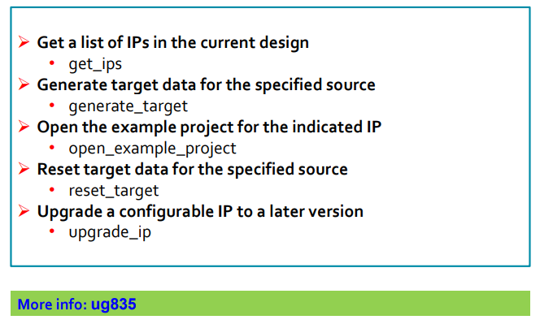
关于IP的TCL命令
在Vivado设计环境中，你可以使用特定的Tcl命令来管理和操作IP核心。以下是针对一些常见任务的Tcl命令及其简要解释：
get_ips - 用途: 获取当前设计中所有IP核心的列表。
- 描述: 当你运行get_ips命令时，Vivado会列出当前项目中所有已经实例化的IP核心。这个列表可以帮助你快速查看设计中包含哪些IP，并获取它们的具体信息。
generate_target
-
用途: 为指定源生成目标数据。
-
描述: 此命令通常用于生成或重新生成IP核心的输出产品，如综合后的设计检查点(DCP)、模拟文件或报告。具体生成哪种类型的目标数据依赖于指定的参数和IP核心的配置。
open_example_project
-
用途: 打开指定IP的示例项目。
-
描述: 许多IP核心随附有示例项目，这些项目展示了如何在设计中使用该IP。通过open_example_project命令，用户可以快速访问和查看这些示例，以更好地理解并利用IP核心。
reset_target
-
用途: 重置指定源的目标数据。
-
描述: 如果你需要将生成的IP核心的目标数据恢复到初始状态，可以使用这个命令。这可能用于撤销之前的生成操作或准备新的生成过程。
upgrade_ip
-
用途: 将可配置IP核心升级到更新版本。
-
描述: 随着时间的推移，IP核心可能会有新版本发布，包含改进或修复。使用upgrade_ip命令可以将项目中的现有IP升级到较新的版本，从而获得这些更新和增强功能。
每一个命令都可以通过在Vivado的Tcl控制台中输入执行，也可以集成到自动化脚本中以实现更高效的工作流程。这些命令是与Vivado交互的基础，让用户能够更方便地管理他们的IP资源。
2.9 IP-Centric Design Flow¶
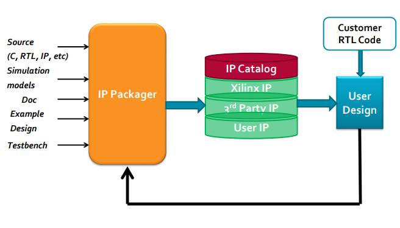
可以通过IP Packager工具，将IP加入到IP Catalog中，IP Catalog里面有Xilinx的IP，3rd Party IP和User IP